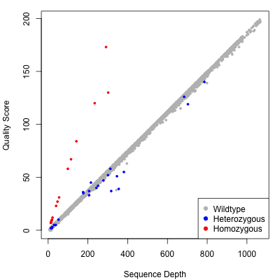

VarScan
User Guides
Germline Variant Calling
VarScan can be used to identify germline SNPs and indels in one or multiple samples.Contents:
Overview
Commands
Input
Methods
Output
VCF Output
Quality Scores
A Note on Indel Positions
Overview
VarScan calls germline variants (SNPs and indels) using a heuristic method and a statistical test based on the number of aligned reads supporting each allele.Commands
Three VarScan subcommands will invoke the germline variant calling model. These work with single-sample and multi-sample mpileup input:mpileup2snp - calls single nucleotide polymorphisms (SNPs) mpileup2indel - calls insertions and deletions (indels) mpileup2cns - calls a consensus genotype (reference, SNP, or indel)
The first two (mpileup2snp and mpileup2indel) report *only* positions at which a variant of the given type (SNP and indel) was called. The third command (mpileup2cns) reports all positions that met the miniumum coverage, or (with the -v parameter), all positions at which a SNP or an indel was called. Use the --output-vcf 1 argument to get VCF 4.1 output.
The following commands still work, but only with single-sample pileup and they do NOT include full VCF output support.
pileup2snp - calls single nucleotide polymorphisms (SNPs) pileup2indel - calls insertions and deletions (indels) pileup2cns - calls a consensus genotype (reference, SNP, or indel)
The first two (pileup2snp and pileup2indel) report *only* positions at which a variant of the given type (SNP and indel) was called. The third command (pileup2cns) reports all positions that met the miniumum coverage, or (with the -v parameter), all positions at which a SNP or an indel was called.
Input
VarScan expects its input to be SAMtools pileup format. from sequence alignments in binary alignment/map (BAM) format. To generate this format, you will need- One or more SAM/BAM files ("myData.bam") that have been sorted using the sort command of SAMtools.
- The reference sequence ("reference.fasta") to which reads were aligned, in FASTA format.
- The SAMtools software package.
Generate a pileup file with the following command:
samtools mpileup -B -f [reference sequence] [BAM file] >myData.pileup
Note the use of the -B parameter to disable BAQ computation. This adjustment seems too stringent, and often reduces base quality scores too aggressively. Note, to save disk space and file I/O, you can redirect pileup output directly to VarScan with a "pipe" command. For example:
samtools mpileup -B -f reference.fasta myData.bam | java -jar VarScan.v2.2.jar mpileup2snp
Older Versions of SAMtools: Pileup Output
Older versions of SAMtools use the pileup command, which is no longer available in newer versions. If you have such a version, you can generate pileup output for a single sample as follows. You'll need:- A SAM/BAM file ("myData.bam") that has been sorted using the sort command of SAMtools.
- The reference sequence ("reference.fasta") to which reads were aligned, in FASTA format.
- The SAMtools software package.
Generate a pileup file with the following command:
samtools pileup -f [reference sequence] [BAM file] >myData.pileup
Do NOT use the -c parameter. It generates consensus format, which is different from pileup format. The next release of VarScan will recognize both formats. Note, to save disk space and file I/O, you can redirect pileup output directly to VarScan with a "pipe" command. For example:
samtools pileup -f reference.fasta myData.bam | java -jar VarScan.v2.2.jar pileup2snp
Methods
VarScan parses the pileup input one base at a time, computing the number of bases supporting each observed allele. Only bases meeting the minimum base quality (default: 20) from reads meeting the minimum mapping quality (default: 1) are considered. The coverage (number of qualifying bases) is calculated. If this meets the minimum threshold (default: 20), VarScan examines each allele that was observed, testing to see if it:- Was supported by at least the minimum number of supporting reads [--min-reads2]
- Meets the minimum allele frequency threshold [--min-var-freq]
- Passes a basic strand-bias filter (if --strand-filter set to 1)
- Has a Fisher's Exact Test p-value below the threshold (if --p-value specified)
Output
VarScan prints results to STDOUT unless an output file is provided (--output-file). Output files have headers, and all share the same format:| Field | Description |
| Chrom | Chromosome or reference name |
| Position | Position from pileup (1-based) |
| Ref | Reference base at this position |
| Cons | Consensus genotype or variant called |
| Reads1 | Number of reads supporting reference |
| Reads2 | Number of reads supporting variant |
| VarFreq | Allele frequency of variant by read count |
| Strands1 | Number of strands on which reference observed (0-2) |
| Strands2 | Number of strands on which variant observed (0-2) |
| Qual1 | Average base quality of reference-supporting bases |
| Qual2 | Average base quality of variant-supporting bases |
| Pvalue | P-value from Fisher's exact test (0.98 means not calculated) |
| MapQual1 | Average mapping quality of reference-supporting reads |
| MapQual2 | Average mapping quality of variant-supporting reads |
| Reads1Plus | Number of reference-supporting reads in + orientation |
| Reads1Minus | Number of reference-supporting reads in - orientation |
| Reads2Plus | Number of variant-supporting reads in + orientation |
| Reads2Minus | Number of variant-supporting reads in - orientation |
| VarAllele | Most prevalent variant allele (even if site not not called variant) |
VCF 4.1 Output
As of v2.2.8, VarScan will produce VCF 4.1 output files when given the --output-vcf 1 argument. As of v2.3.1, you can provide a list of sample names to use in the VCF header with the --vcf-sample-list parameter. This list should be in plain text, one sample per line, in the order that samples appear in the raw mpileup input.Variant Quality Score (VCF output only)
When the mpileup2cns, mpileup2snp, or mpileup2indel commands are used with the --output-vcf option, VarScan produces VCF 4.1 output. This includes, for each sample, individual variant calling information above as well as a quality score. The quality score is a -10 log10 adjustment of VarScan's p-value from Fisher's Exact Test. On a test mpileup file of 10,000 positions, here were the quality scores for consensus calls plotted by sequence depth (a proxy for calling accuracy). The points are color-coded according to the call that VarScan made:
As you can see, VarScan's quality score is directly correlated to the depth of quality base pairs at a given position. For positions called wild-type or heterozygous variant, the slope of the line is roughly linear. For homozygous variants, quality scores rise more rapidly than coverage because all bases support a variant, which makes the probability of an incorrect call very unlikely as more coverage is accrued.